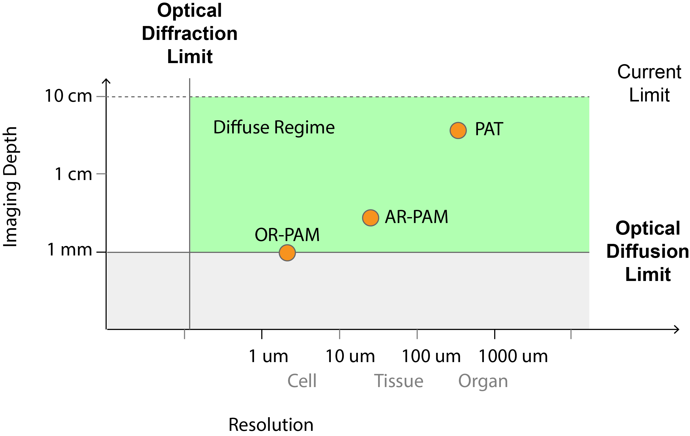

Introduction¶
In the previous chapter, we have explored optical projection tomography, a technique that leverages optical clearing to reduce scattering and achieve imaging depths up to several millimeters inside the sample. However, the clearing process also prevents OPT from in vivo applications. In this chapter, we turn to another technique, photoacoustic imaging (PAI), which takes a different approach and exploits the fact that acoustic waves scatter less than photons in soft tissue. The terms photoacoustic (PA) and optoacoustic (OA) are used interchangeably in the field, and both appear in this thesis.
Overview of PAI¶
Since its emergence in the 1990s, PAI has evolved rapidly from a proof-of-concept laboratory technology to a mature biomedical imaging modality with growing pre-clinical and clinical applications [129]. PAI is a noninvasive, multiscale, and multi-contrast imaging technique [51]. It gives in vivo access to a range of scales, from organelles to whole-body small animals at penetration depths from micrometers to centimeters [24]. By converting the absorbed optical energy into acoustic waves, PAI overcomes the strong scattering of light in tissue, which enables deeper penetration and higher resolution than traditional optical imaging[25]. It is widely adopted in biomedical research to study the anatomical, functional, molecular, and metabolic aspects of living biological structures [18, 26].
Principles of PAI¶
Probe and Light-Matter Interaction¶
PAI relies on the thermoacoustic effect: when short laser pulses illuminate chromophores (e.g. blood hemoglobin), the absorbed photon energy experiences a nonradiative relaxation and is converted to heat, rather than the radiative relaxation of fluorescence in the case of fluorescence microscopy. The heat results in a local temperature rise and causes a thermoelastic expansion of the tissue which leads to the generation of pressure (acoustic) waves that propagate through the tissue [45].
Contrast in PAI arises from the optical absorption of molecules in the tissue. PAI is able to detect a wide variety of endogenous and exogenous absorbers, see Table 4. Endogenous absorbers enable label-free imaging while exogenous agents allow for targeted imaging with higher specificity.
Category |
Absorber |
Illumination Wavelength |
Applications |
|---|---|---|---|
Endogenous |
DNA/RNA |
UV |
|
Exogenous |
nanoparticles |
various |
biomarker targeting |
One drawback of the exogenous agents is their low sensitivity in vivo because their signal is overshadowed by the strong absorption signal from endogenous chromophores such as hemoglobin [26, 27]. To address this, reversibly switchable optoacoustic proteins (rsOAPs), derived from a bacterial phytochrome, have emerged as promising reporters [27, 132, 133, 134, 135, 136]. These proteins have a special photo-physical property: their extinction profiles change when they are illuminated at two distinct wavelengths (referred to as ON and OFF wavelengths) [132, 137, 138]. During photo-switching, the detected ultrasound signals are a temporal multiplex of modulated reporter signals and unmodulated background signals (from endogenous chromophores). This allows one to extract the signals of the introduced labels from tissue background [133, 135, 137, 139].
Detection¶
PAI employs an ultrasound transducer (array) placed at the tissue surface to detect the generated acoustic waves. PAI can be implemented in a variety of setups to accommodate for different imaging tasks [24]. These implementations can be categorized into two groups. One setup is tomography (PAT), in which the sample is fully or partially surrounded by the illumination and detection geometry. Widefield diffuse light and unfocused acoustic detection via a linear or hemispheric ultrasound transducer array enable centimeter imaging depth at a resolution of hundreds of microns [26]. A backprojection-type inversion algorithm is typically used to reconstruct the PA image from acoustic measurements. Another setup is microscopy (PAM), which can be further divided into optical-resolution (OR) and acoustic-resolution (AR) PAM. In OR-PAM, both illumination and the detection are focused, enabling micron to submicron resolution at shallow depths [24]. In AR-PAM, illumination is loosely focused (or unfocused) and detection is performed with a broadband transducer, achieving millimeter imaging depths at a resolution of tens of microns [140]. AR-PAM, also called PA mesoscopy, achieves a good balance between spatial resolution and penetration depth, thus bridging the imaging gap between tomography and microscopy (see Fig. 21).
In this thesis, we focus on PAT and AR-PAM. The most common implementation of AR-PAM uses a raster-scanning system, in which a spherically focused single-element transducer with a large numerical aperture scans over an area on the sample surface [141]. Illumination may be coupled with the transducer [140, 141] or delivered from a fixed laser to avoid artifacts that come from the variations of the spatially dependent fluence [142]. While multi-element transducer arrays have been proposed to avoid the time-consuming scanning procedure [140], they are difficult to manufacture without some sacrifice in sensitivity, center frequency, or bandwidth.
Image Formation¶
For the acoustic signals detected in PAT and AR-PAM, one needs to employ a reconstruction algorithm to recover the original pressure field distribution which is proportional to the deposited energy density map (also called a PA image) [24]. This process is called acoustic inversion, and there has been extensive work on the model of the propagation of acoustic waves and the characterization of the detector. The wave equation describes the propagation of the acoustic waves originated from the PA sources in the sample [8, 143, 144] under specific acoustic properties (for instance, acoustic attenuation and variable speed of sound) of the sample [143, 144, 145]. In a few idealized scenarios, an explicit backprojection-type inversion formula is available [146].
In practice, one often makes reasonable assumptions on the acoustic properties of the medium such that the solution to the wave equation has an explicit expression, for instance, in the form of an integral over a sphere in 3D (or an arc in 2D) [147]. For instance, if one assumes the sample is acoustically homogeneous without attenuation, and the speed of sound is constant, then the solution to the wave equation can be explicitly derived and discretized into a linear system with a model matrix, which is then solved to reconstruct the unknown optical energy map [147]. This model-based approach has been refined to include the properties of the ultrasound transducer, the detection geometry [147, 148, 149], and the fluence variation [150] to improve the quality of the reconstruction.
In the context of PA mesoscopy, a popular alternative approach is the delay-and-sum algorithm, valued for its speed and low-memory requirement, as compared to model-based methods [150]. Instead of the unfocused detection in tomography, one uses a spherically focused transducer with a large numerical aperture to scan the surface of the sample and acquire a set of 1D raw acoustic signals. Due to the limited depth-of-focus of the transducer, image quality degrades significantly in the out-of-focus region. To mitigate this, synthetic-aperture focusing technique (SAFT), originally from ultrasound imaging [151], can be used. It applies appropriate delays (relative to the acoustic focus) to the neighboring scan lines within the sensitivity range of the detector, then sums them up to suppress out-of-focus blur [152]. Many variations of SAFT incorporate correction factors and transducer properties (e.g., the electrical and spatial impulse response) to further enhance the quality and signal-to-noise ratio of PA images [151, 153, 154].
Imaging Depth and Resolution¶
PAI breaks the optical soft diffuse limit due to its unique light in, acoustic out feature. As acoustic scattering is about 1000 times less than optical scattering, PAI achieves a remarkable penetration depth beyond the transport mean free path of 1 mm. The center frequency and the bandwidth of the ultrasound transducer determine the imaging depth and the resolution of PAI, respectively. Similar to any other imaging technology, there is a tradeoff between the imaging depth and spatial resolution. PAI offers a good tradeoff ratio: as a rule of thumb, the resolution is roughly the depth divided by 200 [26] (see Fig. 21).


Fig. 21 Tradeoff between resolution and depth for different PA setups.¶
Motivation and Contribution¶
In this chapter, we focus on an emerging technique which combines PAI with photo-switching protein reporters to further enhance the specificity and sensitivity via their unique temporal signature. Our goal is to develop a temporal unmixing framework, following the methodology introduced in Modeling and Solving of Inverse Problems, to unmix and recover the spatial intensity maps of reporters from temporally multiplexed acoustic signals. We achieve this goal in two stages:
Part I: We model the photo-switching dynamics based on underlying physics, derive a mathematical framework for the temporal evolution of switching temporal series and design an iterative algorithm to unmix different species of reporters from existing acoustically reconstructed PA images. This approach is validated on a PAT setup.
Part II: Building on Part I, we develop a global framework that integrates the photo-switching model with the acoustic forward model. This allows direct recovery of quantitative concentration maps of the reporters from acoustic signals, which eliminates the intermediate reconstruction step and enables us to effectively extract information via the resolution of a single inverse problem instead of two. We validate this framework on a novel AR-PAM setup that our collaborators from the Helmholtz Zentrum München (Cell Engineering Group and Optoacoustic Mesoscopy Group) have been working on.
In both parts, we employ sparsity-based regularization tailored to the unmixing and acoustic inversion problem in the variational framework to improve the quality of the reconstructed image. Computationally, we adopt a matrix-free approach for the forward models via an open-source library PyLops [83] for an efficient implementation and GPU acceleration of large-scale linear operators, which is vital for fast iterative algorithms.